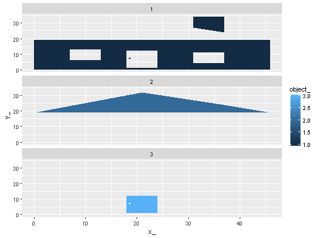

dathome is the metadata, a data frame with columns:
maphomeA "home" profile of three objects with multiple parts as two related data frames.
maphome is the geometry
ggplot(maphome) + aes(x = x_, y = y_, group = branch_, fill = object_) + geom_polypath() + facet_wrap(~object_, nrow = nrow(dathome))